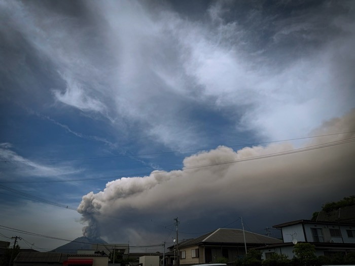

Campaign highlights
Recent field campaigns connecting numerical models, geodetic observations, and collaboration with volcano observatories.

2024 · Montserrat
Soufrière Hills Volcano
High-precision GPS fieldwork and research collaboration with the Montserrat Volcano Observatory.
View the Soufrière Hills 2024 field journal →
May 2025 · Japan
Sakurajima Volcano
Collaborative field research and observations at one of the world's most active volcanoes.
View the Sakurajima 2025 field journal →